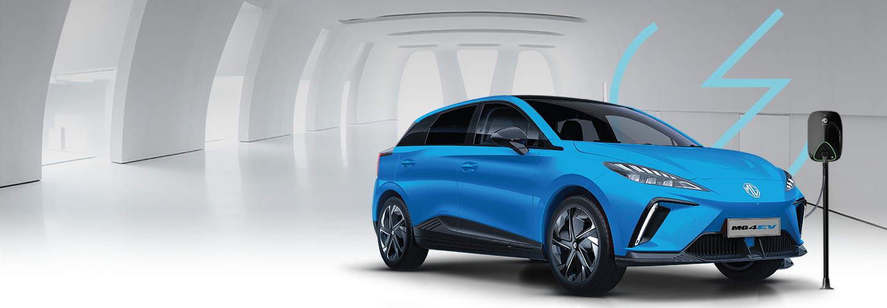

Ada pertanyaan? Silahkan kirim pesan WhatsApp
Indonesia saat ini berada di ambang revolusi transportasi, di mana mobil listrik (EV) diproyeksikan menjadi bagian integral dari masa depan otomotif negara ini. Salah satu faktor utama yang akan mendorong adopsi luas kendaraan listrik adalah infrastruktur pendukungnya. Dengan berkembangnya jaringan stasiun pengisian dan perluasan infrastruktur pengisian daya, masa depan mobil listrik di Indonesia terlihat semakin cerah. Artikel ini akan membahas perkembangan infrastruktur mobil listrik di Indonesia, termasuk stasiun pengisian dan jaringan charger yang semakin luas, serta prospek dan tantangan yang dihadapi dalam membangun ekosistem ini.
Berikut ini adalah gambaran perkembangan infrastruktur mobil listrik di Indonesia di masa yang akan datang :
Seiring dengan meningkatnya minat terhadap mobil listrik, infrastruktur pengisian daya di Indonesia juga mengalami perkembangan signifikan. Pemerintah Indonesia, bersama dengan sektor swasta, telah mulai membangun lebih banyak stasiun pengisian daya (SPKLU) di berbagai wilayah. Penambahan SPKLU ini bertujuan untuk memudahkan pemilik kendaraan listrik dalam mengisi daya, sehingga dapat menghilangkan kekhawatiran tentang jangkauan perjalanan yang terbatas atau "range anxiety".
Menurut data terbaru, stasiun pengisian umum telah mulai tersebar di kota-kota besar seperti Jakarta, Bandung, Surabaya, dan Bali. Langkah ini merupakan bagian dari komitmen pemerintah untuk mencapai target emisi nol bersih (net zero emission) pada tahun 2060. Untuk mendukung hal ini, pemerintah telah menerbitkan regulasi yang mendorong pengembangan infrastruktur pengisian daya di seluruh Indonesia.
Selain itu, perusahaan energi dan operator stasiun pengisian seperti PLN (Perusahaan Listrik Negara) telah mulai bekerja sama dengan pengembang swasta untuk memperluas jaringan SPKLU. Ini termasuk pengembangan stasiun pengisian cepat (fast charging) yang memungkinkan pengisian baterai mobil listrik hingga 80% hanya dalam waktu 30-40 menit. Inisiatif ini penting untuk memastikan bahwa pengguna mobil listrik dapat menikmati perjalanan jarak jauh tanpa kekhawatiran.
Tidak hanya pemerintah, sektor swasta juga memainkan peran kunci dalam mempercepat pengembangan infrastruktur mobil listrik di Indonesia. Beberapa perusahaan swasta dan start-up lokal telah mulai berinvestasi dalam pembangunan stasiun pengisian daya, baik untuk kebutuhan publik maupun pribadi.
Misalnya, beberapa pusat perbelanjaan, hotel, dan gedung perkantoran di Jakarta dan Bali telah mulai menyediakan fasilitas pengisian daya untuk pelanggan mereka. Ini menunjukkan adanya sinergi antara bisnis dan kebutuhan lingkungan yang berkelanjutan. Selain itu, perusahaan seperti MG Motor Indonesia juga mulai menyediakan opsi pengisian daya di rumah untuk pelanggan mereka, yang memudahkan pengisian daya kendaraan di luar SPKLU.
Langkah-langkah ini tidak hanya memudahkan pemilik mobil listrik dalam mengakses pengisian daya, tetapi juga mendorong lebih banyak orang untuk beralih ke kendaraan listrik. Keterlibatan sektor swasta dalam penyediaan infrastruktur ini adalah tanda bahwa pasar mobil listrik di Indonesia sedang berkembang pesat dan diperkirakan akan terus tumbuh dalam beberapa tahun ke depan.
Inovasi teknologi juga memegang peran penting dalam perkembangan infrastruktur mobil listrik di Indonesia. Salah satu inovasi yang mulai diperkenalkan adalah teknologi pengisian cepat dan pengisian nirkabel. Teknologi pengisian cepat (fast charging) memungkinkan pengisian baterai mobil listrik dalam waktu yang jauh lebih singkat dibandingkan dengan metode pengisian konvensional.
Beberapa model mobil listrik terbaru seperti MG 4 EV dan New MG ZS EV sudah mendukung teknologi pengisian cepat ini, yang dapat mengisi daya hingga 80% hanya dalam 30-40 menit. Hal ini sangat penting bagi konsumen yang memiliki mobilitas tinggi dan tidak memiliki banyak waktu untuk menunggu kendaraan mereka terisi penuh.
Selain itu, teknologi pengisian nirkabel (wireless charging) juga mulai diperkenalkan. Meskipun saat ini masih dalam tahap awal pengembangan, teknologi ini menawarkan kemudahan yang luar biasa bagi pemilik mobil listrik, terutama bagi mereka yang sering parkir di rumah atau di kantor. Dengan pengisian nirkabel, pemilik kendaraan hanya perlu memarkir mobil di atas pad pengisian, dan baterai akan mulai terisi secara otomatis. Penggunaan teknologi ini dapat menjadi game-changer dalam hal kemudahan dan efisiensi pengisian daya.
Meskipun ada banyak perkembangan positif, tantangan dalam pengembangan infrastruktur mobil listrik di Indonesia tetap ada, terutama di daerah luar kota besar. Ketersediaan listrik yang tidak merata di beberapa wilayah, ditambah dengan kurangnya infrastruktur dasar, menjadi kendala utama dalam perluasan jaringan SPKLU di seluruh negeri.
Selain itu, biaya pengembangan infrastruktur pengisian daya juga masih cukup tinggi, yang bisa menjadi hambatan bagi pertumbuhan pasar mobil listrik di daerah pedesaan atau kota-kota kecil. Oleh karena itu, diperlukan kolaborasi antara pemerintah pusat, pemerintah daerah, dan sektor swasta untuk mengatasi tantangan ini dan memastikan bahwa manfaat dari mobil listrik dapat dirasakan oleh seluruh masyarakat Indonesia, tidak hanya mereka yang tinggal di kota besar.
Pemerintah Indonesia telah menunjukkan komitmennya dalam mendukung adopsi kendaraan listrik melalui berbagai kebijakan dan regulasi. Salah satu kebijakan yang signifikan adalah pemberian insentif bagi pembelian mobil listrik, yang bertujuan untuk mengurangi harga kendaraan listrik sehingga lebih terjangkau bagi masyarakat luas.
Selain itu, pemerintah juga telah menetapkan regulasi yang mendukung pengembangan infrastruktur pengisian daya, termasuk perizinan yang lebih mudah bagi pembangunan SPKLU dan pengaturan tarif listrik yang kompetitif untuk pengisian daya kendaraan listrik. Langkah-langkah ini diharapkan dapat mendorong lebih banyak investasi dalam infrastruktur mobil listrik dan mempercepat transisi ke kendaraan rendah emisi di Indonesia.
Masa depan infrastruktur mobil listrik di Indonesia tidak hanya terletak pada pengembangan stasiun pengisian daya, tetapi juga pada integrasi dengan sumber energi terbarukan. Indonesia memiliki potensi besar untuk mengembangkan energi terbarukan seperti tenaga surya, angin, dan panas bumi. Dengan mengintegrasikan energi terbarukan ke dalam jaringan pengisian daya mobil listrik, Indonesia dapat mengurangi ketergantungan pada bahan bakar fosil dan mempercepat transisi ke energi bersih.
Beberapa proyek percontohan telah dimulai, di mana stasiun pengisian daya menggunakan panel surya untuk menghasilkan listrik yang kemudian digunakan untuk mengisi daya kendaraan listrik. Ini adalah langkah penting menuju keberlanjutan dan pengurangan emisi karbon, yang sejalan dengan tujuan Indonesia untuk mencapai net zero emission pada tahun 2060.
Dengan perkembangan yang cepat dalam infrastruktur pengisian daya dan dukungan kuat dari pemerintah serta sektor swasta, masa depan mobil listrik di Indonesia terlihat sangat optimis. Pertumbuhan ini tidak hanya akan membantu mengurangi emisi karbon dan meningkatkan kualitas udara, tetapi juga akan menciptakan lapangan kerja baru di sektor teknologi dan energi bersih.
Pengembangan infrastruktur mobil listrik juga diharapkan dapat mendorong industri otomotif lokal untuk berinovasi dan bersaing di pasar global. Indonesia memiliki peluang besar untuk menjadi salah satu pemain utama dalam industri kendaraan listrik di Asia Tenggara, asalkan terus melakukan investasi dan memperluas jaringan infrastruktur yang mendukung.
Infrastruktur mobil listrik di Indonesia sedang berkembang dengan pesat, didorong oleh komitmen pemerintah dan investasi dari sektor swasta. Meskipun masih ada tantangan yang harus diatasi, seperti ketersediaan listrik di daerah dan biaya pengembangan yang tinggi, prospek masa depan terlihat sangat positif.
Dengan perkembangan teknologi seperti pengisian cepat dan pengisian nirkabel, serta integrasi dengan energi terbarukan, Indonesia berada di jalur yang tepat untuk menjadi salah satu negara terdepan dalam adopsi kendaraan listrik di kawasan ini. Bagi masyarakat, beralih ke mobil listrik tidak hanya memberikan manfaat ekonomi, tetapi juga berkontribusi pada upaya global dalam mengatasi perubahan iklim. Dengan infrastruktur yang semakin maju, masa depan mobil listrik di Indonesia sangatlah cerah.
Ada pertanyaan? Silahkan kirim pesan WhatsApp